デンジャラスで不健全な大学生活を送っていたという仁藤さんへ大事な質問です。恋人と長続きのコツはなんですか？女のフットワークが軽すぎると男性は嫌なもんだと言われました。私はどうしたら良いでしょうか？
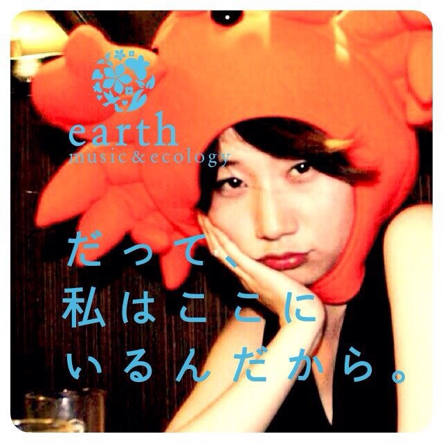
南 佑依
宴 Master
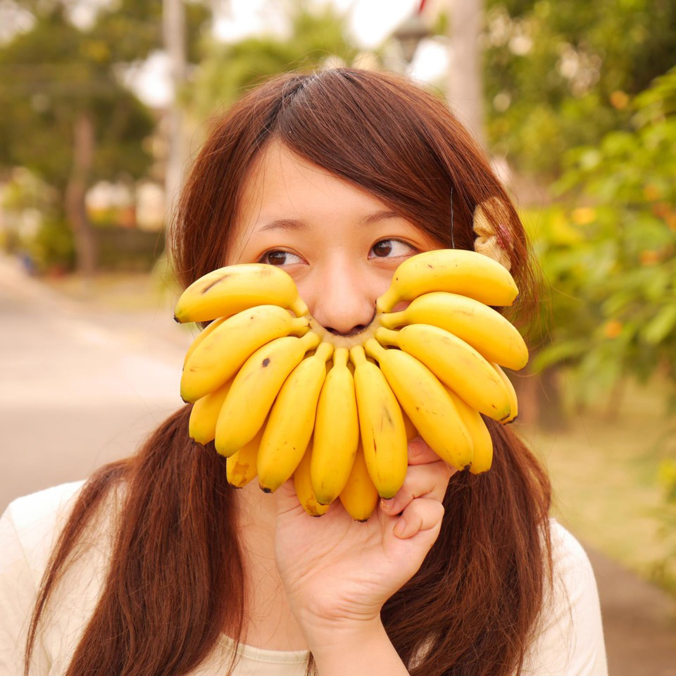
橋本 夏海
Vivid Master
第一代仁藤チルドレンになれて、本当に幸せでした！ビビッドカラーの服がトレードマークの橋本夏海です。 文字数に限りがあるみたいなので、一言だけ言わせてください。 いつか仁藤さんと仕事でご一緒できるよう、素直に悔しがり、学び続けます！待っていてください。
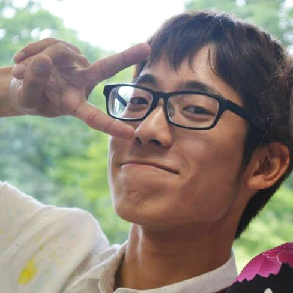
小林 颯
タイピング Master
仁藤さん！電通インターンでは、大変お世話になりました。何度も悔しいと感じましたが、それでもやっぱり人に伝える為のものづくりは面白いです。将来、仁藤さんと一緒に世界一面白いものをつくるために、まずは今とにかくがんばります。
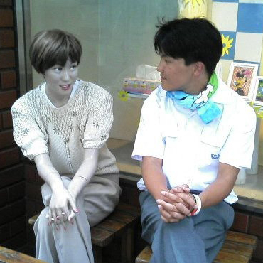
尽くし Master
林 勇樹
自身、正直なところ、はじめは地酒仁藤のよさを知りませんでした。 しかし、一度味わうと独特の雰囲気につつまれるのです。 人に尽くすということは、その人の心を喜ばせるということです。 その真髄をぜひ、お楽しみ下さい。
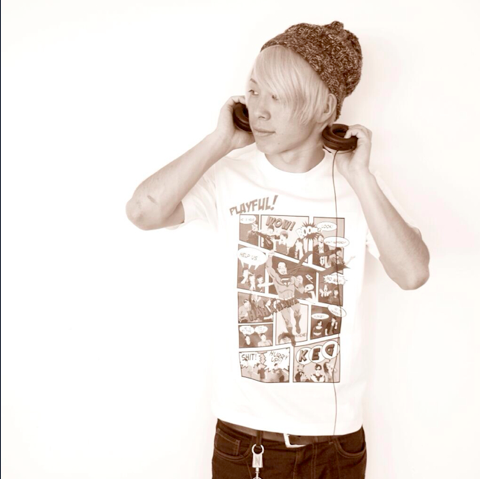
満永 隆哉
ライブエンターテイメント Master
「エンターテイメントマスター」とか言って自己紹介したけどまだまだでした。自分もいくつになっても着衣で海にダイブできるハイパーエンターテイナーになります。
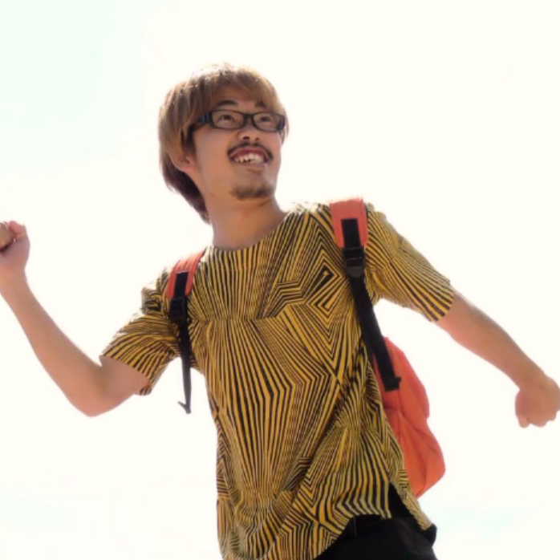
後藤 宙
日本語ラップ Master
仁藤さん 座長業お疲れ様でした。 今回のインターンは悔しい思いの歴史だったような気がします。 デキるし面白い人に囲まれてめちゃくちゃ刺激的でした。 いつか下北の豪邸でパーティする時は呼んでください。ラップしに行きます。
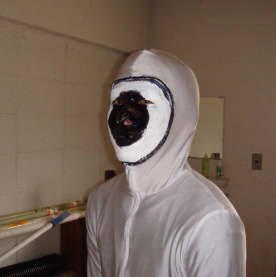
大沼 勇人
独り旅行 Master
電通らしいクリエイティブは出来なかったなという反省以上に、私に貴重な機会をくださってありがとうございましたという感謝の気持ちがいっぱいすぎて、目玉親父になってしまいました。
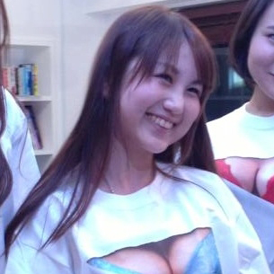
相川 美菜子
女子力 Master
私にとって、座長であり、師であり、先輩であり、父であり、プードルのような仁藤さん。そんな仁藤さんが見せる奥深い一面に、魅了され続けたアツい7日間でした。目一杯の感謝を込めて。また、いつの日か。相川 美菜子
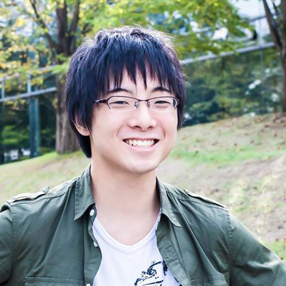
木原 共
クロッチマスター見習い
僕も男の情熱を原動力にして、次の日本のデファクトスタンダードを作りたいです。色々とご教授ありがとうございました！！！
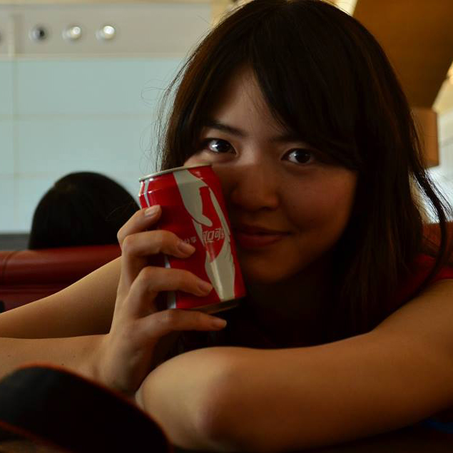
若杉 茜
レイアウト Master
仁藤さんのキュートな笑顔に髪型に服装にインターンの間中とっても癒されておりました！下北にお住まいになられたらますます下北系のキュートボーイになられるのですね！本当にお世話になりました！
和田 夏実
イラスト Master
仁藤さん！3週間本当にありがとうございました。厳しくもじんわりあたたかい仁藤さんのもとで悩んで悩んで悩んだ3週間でした。こんなに素敵な経験をさせていただけて本当にありがとうございます。和田はこれからぐぐんと成長するのでその素敵な微笑みでちょこっと注目していて頂けたらなあと思います！ありがとうございました！
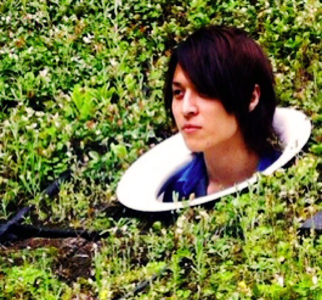
宗像 悠里
納得させちゃう Master
CM担当の宗像です。第一課題で打ちのめされ、心身共に苦闘しても後に復帰できたのは、実は仁藤さんの「ハニカミ」に元気づけられたからでした。感謝の意を込め、仁藤さんに「ハニカミマスター」の称号を授与します！
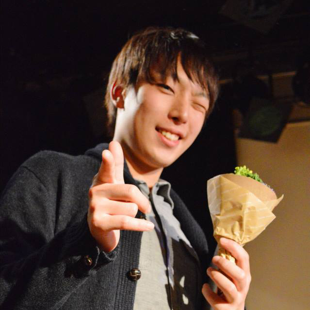
村上 晋太郎
素数 Master
この数年で一番心の動いた三年間でした。悔しいこともたくさんあったけど、作り続けようという気持ちがより一段と強くなった気がします。仁藤さん、いつか倒すので楽しみに待っていて下さいね♡